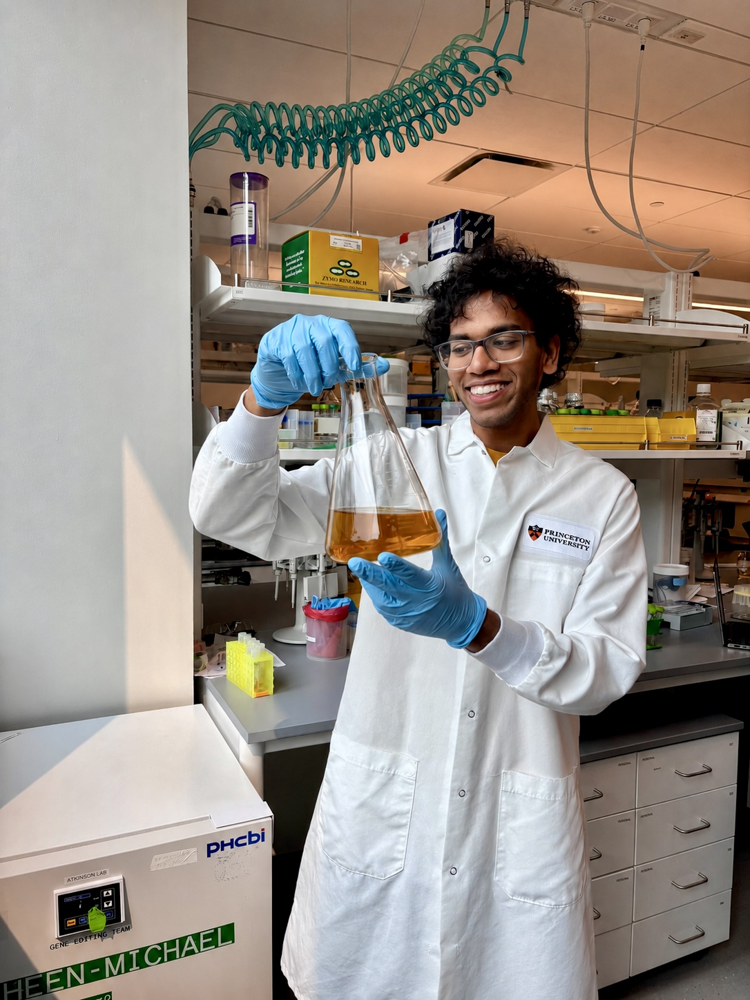
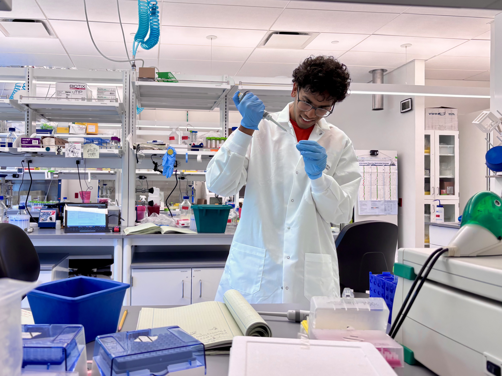
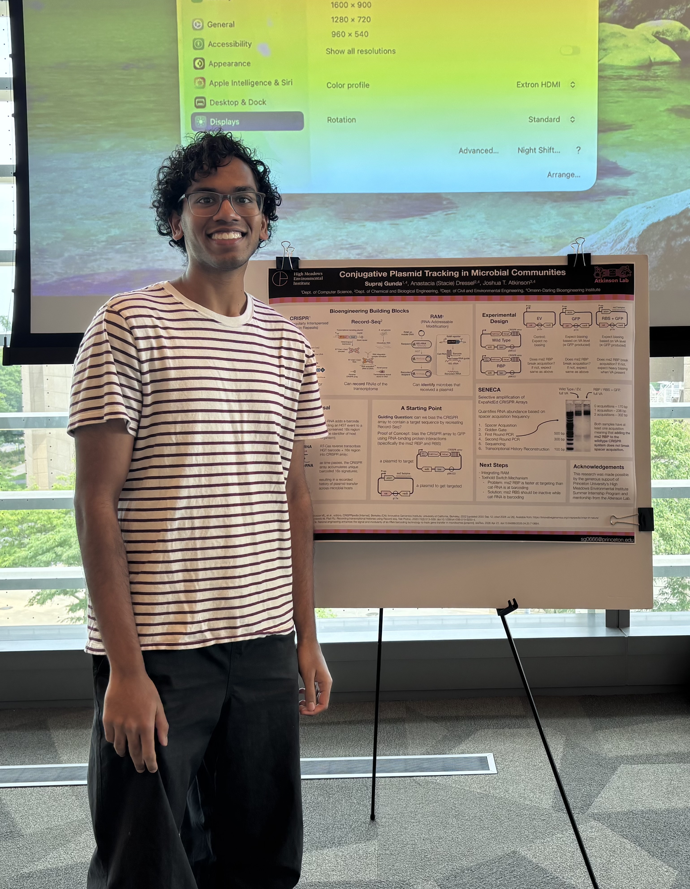
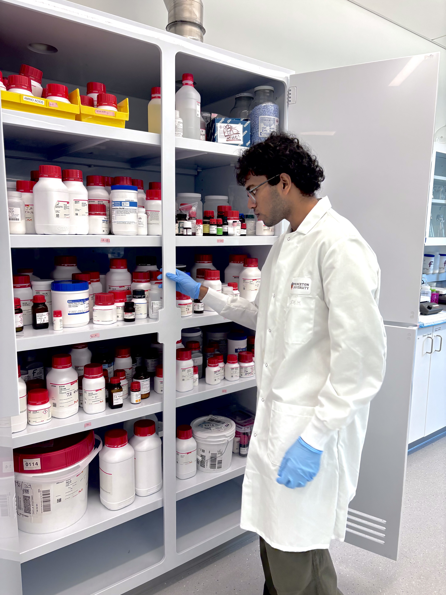
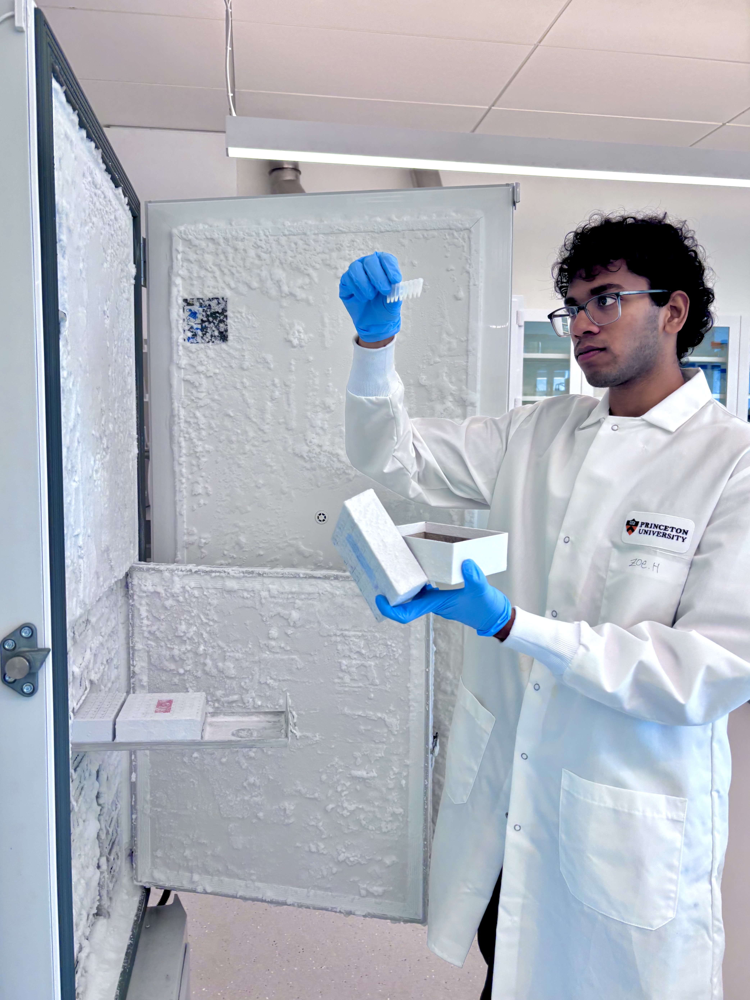

Supraj
Gunda
My projects have spanned computer science and biology, including applying machine learning to predict coral bleaching, modeling enzyme phase separation, and designing mechanisms to track plasmids across microbial communities.
I am a Princeton senior pursuing a B.S. in computer science, with a focus on bioengineering and computational biology.
These experiences have strengthened my interest in building computational approaches that help us better understand, predict, and engineer biological systems.
What excites me most about this intersection is its unique combination of technical challenge and collaboration. Biological problems rarely fit neatly within a single discipline, so meaningful progress depends on researchers with different perspectives and skill sets working together.
Behind the work
Lab photos and fun






01 / 06